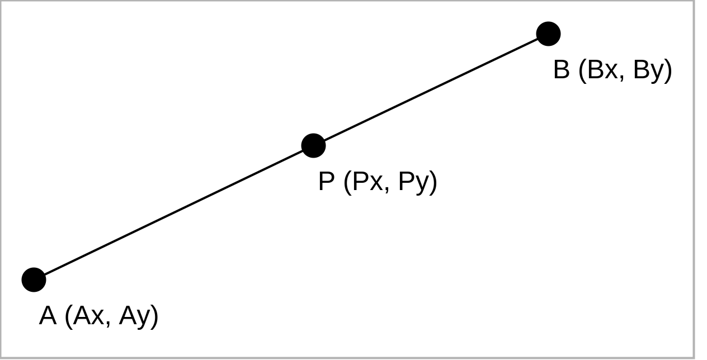

2019/05/22
点が線分上にあるかどうかを判定する
点が線分上にあるかどうかを判定する方法をメモしておきます。
方法
点Pが線分AB上にあるかどうかは以下のように算出できます。
if ((A.x <= P.x && P.x <= B.x) || (B.x <= P.x && P.x <= A.x)) {
if ((A.y <= P.y && P.y <= B.y) || (B.y <= P.y && P.y <= A.y)) {
if ((P.y * (A.x - B.x)) + (A.y * (B.x - P.x)) + (B.y * (P.x - A.x)) == 0) {
// 点Pが線分AB上にある
return true;
}
}
}
// 点Pが線分AB上にない
return false;